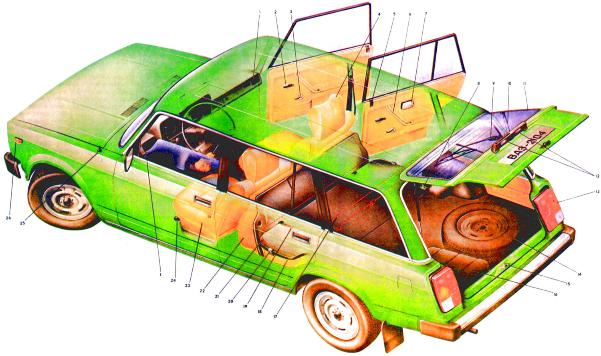

Возможно, имелся в виду автомобиль ВАЗ-2104 («Жигули») — пятиместный универсал субкомпактного
класса. За основу взята модель ВАЗ-2105.
История
Серийный выпуск автомобиля ВАЗ-2104 («четвёрки») был начат на Волжском автомобильном заводе во
второй половине 1984 года. Параллельно с новой моделью выпускали аналогичный по классу
автомобиль ВАЗ-2102 («двойка»), который к апрелю 1986 года был полностью вытеснен с конвейера.
От автомобиля-«донора» «четвёрке» достался ряд оригинальных деталей, касающихся задней части
авто.
При создании этой модели конструкторы руководствовались важной особенностью того времени:
создание новой модели с минимальными затратами на производство и максимальным потребительским
эффектом. Поэтому за основу была взята модель ВАЗ-2105. После удлинения крыши появились
выштамповки для усиления жёсткости. Такая конструкция кузова позволяет разместить на крыше
длинный багажник, перегружать который не рекомендуется, так как расчётная жёсткость кузова
универсала значительно ниже, чем у седана. Задняя дверь открывалась вверх, на ней было применено
абсолютно новое решение — обогрев заднего стекла и стеклоочиститель, — до 1994 года
использовавшиеся только в производстве автомобилей, шедших на экспорт, а затем вошедшее в
стандартную комплектацию.
В конце 1990-х годов несколько лет выпускалась «улучшенная» модификация ВАЗ-21043-20, оснащённая
пятиступенчатой коробкой передач, рейлингами на крыше, электрооборудованием и салоном с
анатомическими передними сиденьями от ВАЗ-2107.
Конструкция
Так как передняя часть автомобиля идентична моделям с кузовом седан, серийному отопителю сложнее
согреть больший объём салона в холодный период года. Задняя часть автомобиля часто запотевает в
холода. У автомобиля штатно отсутствуют задние вентиляционные отверстия для сброса салонного
воздуха (в отличие от ВАЗ-2107), что затрудняет процесс закрытия дверей (с закрытыми стёклами).
По сравнению с ВАЗ-2105 и 2107 (с идентичными моторными установками) имеет меньшую максимальную
скорость (данные из «инструкции по эксплуатации» ~137 км/ч против ~142 км/ч) в связи с
изменённым передаточным отношением главной передачи — 4,44 (ранние модификации) против 4,3 на
седане.

Задняя дверь подвержена загрязнению дорожной грязью (пылью, поднимаемой колёсами),
локально затягиваемой при движении на больших скоростях в зону пониженного давления —
исправляется установкой на 5-ю дверь верхнего дефлектора, подающего (в зону разрежения) более
чистый воздух с крыши. Ещё существует способ, как избежать накопления грязи на задней двери —
это изменение конструкции заднего бампера — нижнюю часть надо выгнуть в обратную сторону и
закрыть щель между бампером и кузовом — пластину 1 метр на 15 см посередине. Бензобак объёмом 43
литра (против 39) расположен горизонтально под днищем багажника без дополнительной защиты — есть
вероятность повреждения при движении по пересечённой местности.
Модификации
ВАЗ-2104 — двигатель ВАЗ-2105, 1,3 литра, карбюратор, с 4-ступенчатой коробкой передач (КПП),
базовая модель.
ВАЗ-21041 — двигатель ВАЗ-2101, 1,2 литра, карбюратор с 4-ст. КПП. Серийно не выпускалась.
ВАЗ-21043 — двигатель ВАЗ-2103, 1,5 литра, карбюратор с 4- или 5-ст. КПП.
ВАЗ-21043-33 — двигатель ВАЗ-2103, 1,5 литра, карбюратор с 4- или 5-ст. КПП.
ВАЗ-21044 — двигатель ВАЗ-21213, 1,7 литра, моновпрыск, 5-ст. КПП, экспортная модель.
ВАЗ-21045Д — двигатель ВАЗ-341, 1,5 литра, дизель, 5-ст. КПП.
ВАЗ-21046 — двигатель ВАЗ-2105, 1,3 литра, 4-ступенчатая КПП, правый руль.
ВАЗ-21047 — двигатель ВАЗ-2103, 1,5 литра, карбюратор, 5-ст. КПП, правый руль.
ВАЗ-21043-20 — двигатель ВАЗ-2103, 1,5 литра, карбюратор, 5-ст. КПП, элементы салона и
электрооборудования от ВАЗ-2107.
ВАЗ-21048 — двигатель ВАЗ-343, 1,77 литра, дизель, 5-ст. КПП.
ВАЗ-21041i — двигатель ВАЗ-21067 1,6 литра инжектор, 5-ст КПП, салон и электрооборудование
ВАЗ-2107, передние сиденья от Иж-2126.
ВАЗ-21041 VF — дизайн радиатора ВАЗ-2107, двигатель ВАЗ-2104 1,5 литра инжектор, 5-ст КПП, салон
и электрооборудование ВАЗ-2107, передние сиденья от Иж-2126.
Модель
Модель я взял у Пользователя kostja334567
У него ещё много таких крутых моделей и я их использую для сайта. (Чтобы остановить анимацию нажмите и проведите на окно где анимация и появится кнопка плей, нажмите на неё.) Спасибо kostja334567!